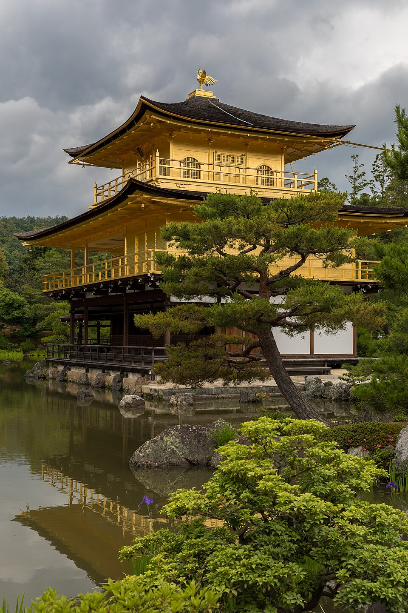
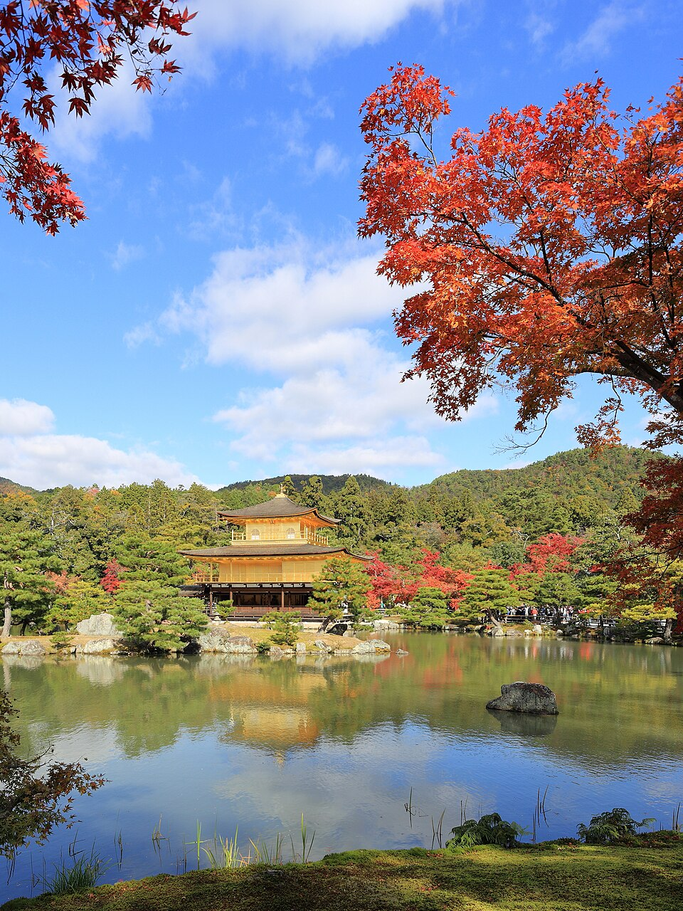

Kinkaku-ji (Золотой павильон)
Север · ~30-40 мин, автобус 101/205 или метро + автобус от отеля



Дзен-павильон 1397 года, верхние два этажа покрыты золотой фольгой, отражается в пруду Kyoko-chi. Строился как вилла сёгуна Ashikaga Yoshimitsu, после его смерти по завещанию стал храмом. Нынешнее здание 1955 года - оригинал сгорел в 1950-м от руки послушника, историю потом описал Mishima в романе «Золотой храм».
9:00-17:00 ежедневно, ~¥500. Людно с 10 до 16, приезжай к открытию.
Рядом


Фото: Wikimedia Commons (лицензии под каждым фото). Часы и цены проверены 20.10.2026 по путеводителям и официальным сайтам - перепроверь перед визитом, сезонно меняются. ← ко всем местам